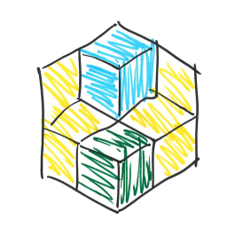
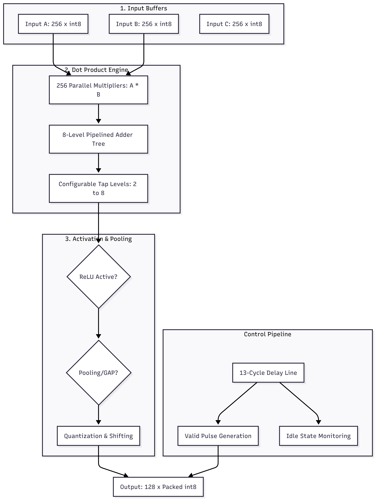

Based in St. John's, NL. Specializing in TBD, but interested in all thing ML/AI

The Problem: I wanted a flexible platform to allow quick iteration on AI/ML experiments without being tied to any particular platform, stack, learning paradigm, or environment type, while being able to keep a persistent record of my iterations.
The Approach: This was/is an ambitious project, so I tackled it in stages.
The Current State: This is early in development, but eerily functional. As of March 29, 2026, the project is three weeks old, but already showing promise.
Where It Goes From Here: There's a long uphill climb ahead, but the foundation is solid and the potential is exciting. Since I've kept everything as flexible and unopinionated as possible, there's room for a lot of growth. If I weren't so wrapped up in developing the platform itself, I could already be writing better plugins, deploying non-trivial bot instances on it and getting valuable data in return. For ~three weeks of work, it's actually already almost useful.
The Problem: A robotic finger equipped with only an IMU sensor array needed to classify tactile patterns in real-time. Real world data is messy, and it's not always practical to offload processing to cloud infrastructure; hardware's not cheap either.
The Approach: Developed a tremendously flexible hardware implementation of a whole class of convolutional neural networks. Leveraged SystemVerilog to create a custom ISA and microkernel to allow for flexible neural architectures to operate on extremely lightweight hardware within certain, strict constraints.
The Current State: The project is presently stalled, pending renewed interest and greater technical acumen to overcome a few of the remaining challenges, but here's the as-built.
Highlights: Since the project isn't actually on actual hardware, it seems more useful to share some of the successes thus far. I don't want to undersell what I've accomplished, because it's pretty awesome.
I started with a minimalist project brief—essentially a handwritten diagram and a few keywords. I translated these incomplete specifications into a full hardware/software co-design stack, including a custom training pipeline, and FPGA-based inference.
There are three aspects of the hardware design I'm particularly proud of and I'd encourage you to check out the GitHub repository linked below for more details on each of them. I've only included the dot product module diagram here, but the higher level orchestration layer and the instruction set architecture are also worth a look. They're called "conv_core.sv" and "instruction_handler.sv" respectively. The source code related to the following section is called "int8_vector_core.sv" in the repository.
This is perhaps the aspect of the hardware design I'm most proud of, or at least it's the most easily demonstrable. It's a module, capable of handling multiple small operations in parallel, when larger operations aren't needed, and it performs these small operations more quickly. An FPGA is a very different animal than a CPU or GPU. It's not a collection of cores, but rather a sea of logic blocks and memory, which can be configured to operate in whatever way you see fit. This means that, with the right design, you can achieve a level of parallelization that would be unimaginable on a traditional architecture. I'm going to leave the diagram to speak for itself, but suffice it to say that this design warrants a follow up question or two if you're so inclined.

Humorously/unfortunately, my memory management strategy negated nearly all of the benefits of parallelization. That's one of the left-to-do items for future optimization. Once that problem is solved, the adder will be able to operate at full capacity, spitting out results every other clock cycle.
Proved that a minimal CNN could maintain 90%+ classification accuracy even when restricted to a tiny integer domain.
The SystemVerilog core is instruction-driven. This allows the model architecture and weights to be updated at runtime via a simple serial interface, effectively creating a "CNN operating system."